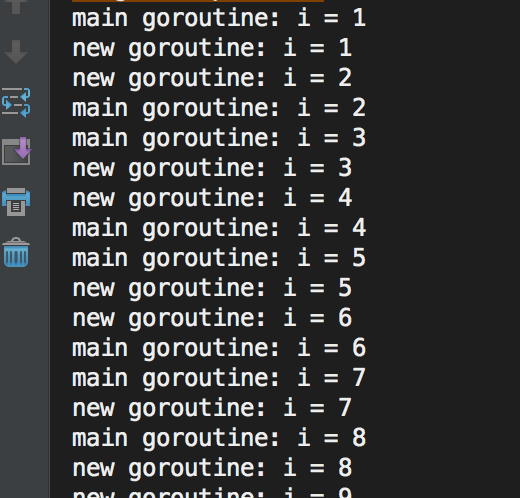
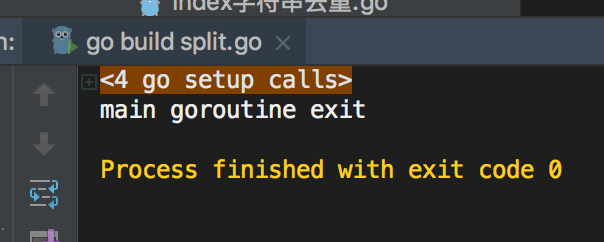

1. 什么是Goroutine
goroutine是Go语言并行设计的核心，有人称之为go程。 goroutine说到底其实就是协程，它比线程更小，十几个goroutine可能体现在底层就是五六个线程，Go语言内部帮你实现了这些goroutine之间的内存共享。执行goroutine只需极少的栈内存(大概是4~5KB)，当然会根据相应的数据伸缩。也正因为如此，可同时运行成千上万个并发任务。goroutine比thread更易用、更高效、更轻便。
一般情况下，一个普通计算机跑几十个线程就有点负载过大了，但是同样的机器却可以轻松地让成百上千个goroutine进行资源竞争。
2. Goroutine的创建
只需在函数调⽤语句前添加 go 关键字，就可创建并发执⾏单元。开发⼈员无需了解任何执⾏细节，调度器会自动将其安排到合适的系统线程上执行。
在并发编程中，我们通常想将一个过程切分成几块，然后让每个goroutine各自负责一块工作，当一个程序启动时，主函数在一个单独的goroutine中运行，我们叫它main goroutine。新的goroutine会用go语句来创建。而go语言的并发设计，让我们很轻松就可以达成这一目的。
示例代码：
func newTask() {
i := 0
for {
i++
fmt.Printf("new goroutine: i = %d\n", i)
time.Sleep(1*time.Second) //延时1s
}
}
func main() {
//创建一个 goroutine，启动另外一个任务
go newTask()
i := 0
//main goroutine 循环打印
for {
i++
fmt.Printf("main goroutine: i = %d\n", i)
time.Sleep(1 * time.Second) //延时1s
}
}

2.1. Goroutine特性
主goroutine退出后，其它的工作goroutine也会自动退出：
func newTask() {
i := 0
for {
i++
fmt.Printf("new goroutine: i = %d\n", i)
time.Sleep(1 * time.Second) //延时1s
}
}
func main() {
//创建一个 goroutine，启动另外一个任务
go newTask()
fmt.Println("main goroutine exit")
}

2.2. runtime包
2.2.1. Gosched
runtime.Gosched() （go schedule）用于让出CPU时间片，让出当前goroutine的执行权限，调度器安排其他等待的任务运行，并在下次再获得cpu时间轮片的时候，从该出让cpu的位置恢复执行。 有点像跑接力赛，A跑了一会碰到代码runtime.Gosched() 就把接力棒交给B了，A歇着了，B继续跑。
示例代码：
func main() {
//创建一个goroutine
go func(s string) {
for i := 0; i < 2; i++ {
fmt.Println(s)
}
}("world")
for i := 0; i < 2; i++ {
runtime.Gosched() //import "runtime" 包
/*
屏蔽runtime.Gosched()运行结果如下：
hello
hello
没有runtime.Gosched()运行结果如下：
world
world
hello
hello
*/
fmt.Println("hello")
}
}
以上程序的执行过程如下：
主协程进入main()函数，进行代码的执行。当执行到go func()匿名函数时，创建一个新的协程，开始执行匿名函数中的代码，主协程继续向下执行，执行到runtime.Gosched( )时会暂停向下执行，直到其它协程执行完后，再回到该位置，主协程继续向下执行。
2.2.2. Goexit
调用 runtime.Goexit() 将立即终止当前 goroutine 执⾏，调度器确保所有已注册 defer延迟调用被执行。
示例代码：
func main() {
go func() {
defer fmt.Println("A.defer")
func() {
defer fmt.Println("B.defer")
runtime.Goexit() // 终止当前 goroutine, import "runtime"
fmt.Println("B") // 不会执行
}()
fmt.Println("A") // 不会执行
}() //不要忘记()
//死循环，目的不让主goroutine结束
for {
}
}
运行结果：B.defer A.defer
2.2.3. GOMAXPROCS
调用 runtime.GOMAXPROCS() 用来设置可以并行计算的CPU核数的最大值，并返回之前的值。
示例代码：
func main() {
//n := runtime.GOMAXPROCS(1) // 第一次 测试
//打印结果：111111111111111111110000000000000000000011111...
n := runtime.GOMAXPROCS(2) // 第二次 测试
//打印结果：010101010101010101011001100101011010010100110...
fmt.Printf("n = %d\n", n)
for {
go fmt.Print(0)
fmt.Print(1)
}
}
在第一次执行runtime.GOMAXPROCS(1) 时，最多同时只能有一个goroutine被执行。所以会打印很多1。过了一段时间后，GO调度器会将其置为休眠，并唤醒另一个goroutine，这时候就开始打印很多0了，在打印的时候，goroutine是被调度到操作系统线程上的。
在第二次执行runtime.GOMAXPROCS(2) 时， 我们使用了两个CPU，所以两个goroutine可以一起被执行，以同样的频率交替打印0和1。